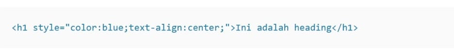
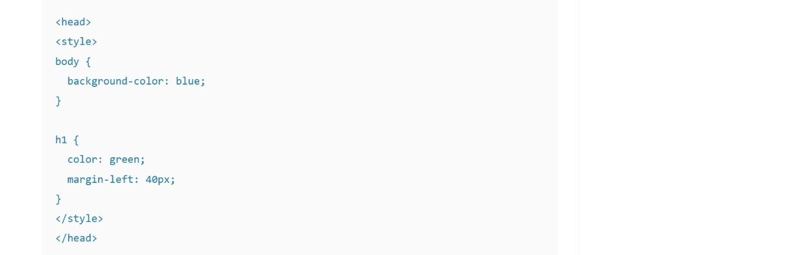

Tipe yang pertama adalah Inline CSS. Seperti namanya, kode CSS ini langsung ditempatkan di dalam baris kode HTML. Contohnya adalah seperti ini:.
Kalau Inline CSS hanya mempengaruhi satu baris, External CSS bisa mempengaruhi keseluruhan website. Tentunya hal ini dilakukan dengan mengubah file CSS, tanpa perlu menuliskan kode secara berulang. Perlu diperhatikan, ciri khas dari External CSS adalah menggunakan tag head Setelah itu, baru sisipkan file CSS sesuai kebutuhan. Contohnya seperti ini:
Tipe yang terakhir adalah Internal CSS. Kurang lebih, tipe yang satu ini mirip dengan Inline CSS. Namun, kodenya tidak dituliskan di baris yang sama. Contohnya adalah sebagai berikut:
